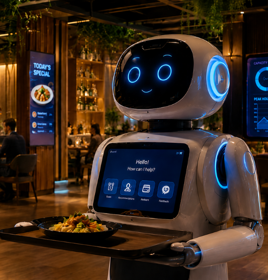
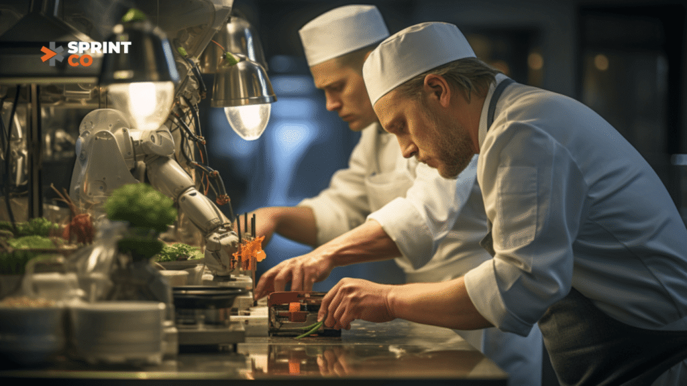
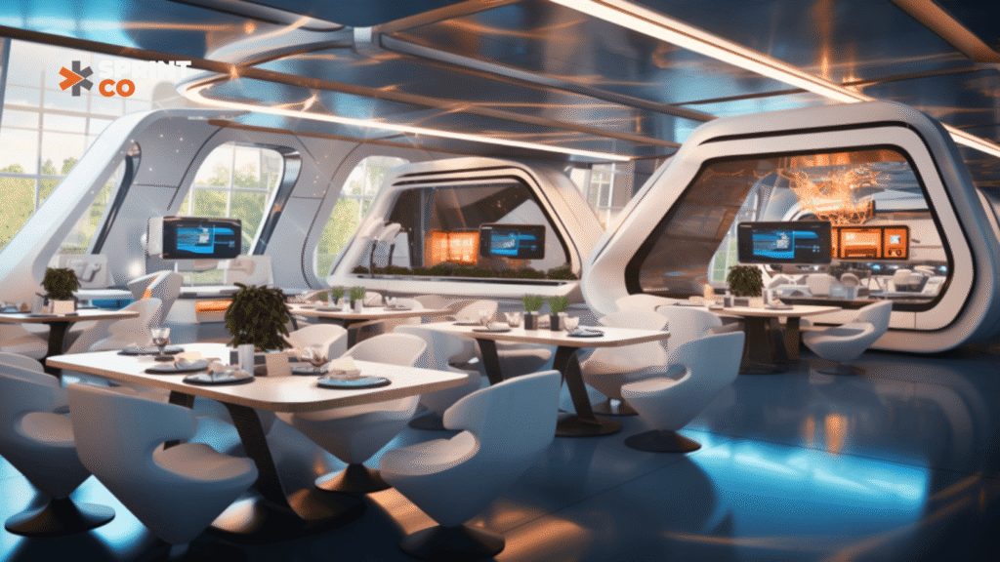
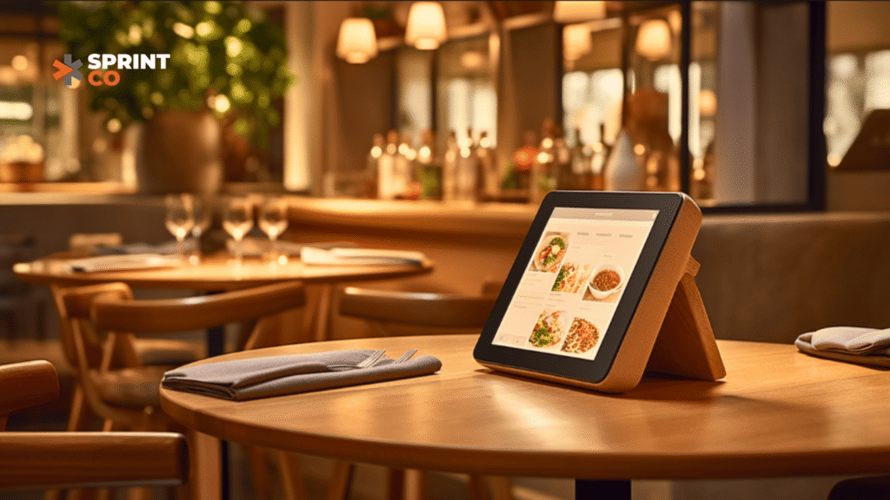

The food and beverage (F&B) industry is no longer just about serving great food—it’s about creating memorable experiences, operating efficiently, and staying ahead of customer demands. Artificial Intelligence (AI) is revolutionizing the way restaurants operate, from managing inventory to engaging with customers. With the global AI market for F&B projected to grow from USD 13.39 billion in 2025 to USD 67.73 billion by 2030 at a CAGR of 38.3%, the future of dining is smarter than ever.
Here’s how AI is shaping the F&B industry and how you, as a restaurateur, can harness its power to boost sales and streamline operations.
1. Personalizing Customer Experiences
AI tools can analyze customer data to offer personalized recommendations, creating a unique dining experience for every guest.
Example:
- Zomato AI acts as a “foodie buddy,” suggesting dishes based on a user’s past orders.
- Swiggy’s Neural Search enables conversational order placements, soon to include regional languages for a diverse customer base.
How You Can Use It:
- Implement AI-powered recommendation engines for online and in-house ordering systems.
- Use customer data to craft personalized offers, loyalty programs, or menu suggestions.
2. Streamlining Day-to-Day Operations

AI optimizes operations, ensuring your restaurant runs like clockwork. From inventory management to staff scheduling, the benefits are immense.
Example:
- Domino’s AI collaboration with Microsoft helps streamline inventory and scheduling, allowing managers to focus on customer service.
- AI-driven inventory systems predict weekly product requirements, minimizing wastage and maximizing stock efficiency.
How You Can Use It:
- Use AI tools like MarketMan or MarginEdge to manage inventory in real time.
- Adopt AI for staff scheduling during peak and off-peak hours to save costs and boost efficiency.
3. Enhancing Marketing and Customer Engagement
AI doesn’t just improve operations—it makes your marketing smarter.
Example:
- AI-powered chatbots like Niki.ai assist customers in placing orders while building deeper brand engagement.
- Tools like Hootsuite analyze social media chatter to understand customer preferences and trends.
How You Can Use It:
- Deploy chatbots for customer queries and reservations, reducing wait times and enhancing satisfaction.
- Use AI-powered CRM tools like Toast to send targeted offers based on customer behavior.
4. Innovating Dining Formats

AI is transforming traditional dining spaces into multifunctional experiences.
Trends Shaping the Future:
- Micro Dining: Small spaces, big profits. AI-driven demand forecasting ensures every square inch is optimized.
- Eatertainment: Combine dining with interactive experiences like VR gaming or live performances to create memorable visits.
- Co-Branded Outlets: AI facilitates seamless operations for shared kitchen spaces serving multiple brands.
How You Can Use It:
- Experiment with AI-driven concepts like multi-themed spaces or self-ordering kiosks.
- Introduce features like real-time waitlist updates or smart table management.
5. Boosting Sustainability
Sustainability isn’t just a trend—it’s an expectation. AI helps restaurateurs reduce food waste, optimize energy use, and build eco-friendly operations.
Example:
- Global brands like Taco Bell and KFC use AI for demand forecasting, ensuring consistent availability without overstocking.
How You Can Use It:
- Adopt AI-powered systems to monitor food waste and track usage patterns.
- Integrate sustainable materials and AI-driven systems to appeal to eco-conscious diners.
6. Embracing AI-Powered Technology

The dining experience itself is being redefined by technology.
What’s Trending:
- Smart Spaces: QR code menus, charging ports at tables, and ordering tablets.
- Facial Recognition: KFC’s experiments in China use facial recognition to tailor dining experiences based on preferences.
- Luxury Bathrooms: AI-designed spaces even extend to creating unforgettable restroom experiences with touchless tech and smart mirrors.
How You Can Use It:
- Integrate user-friendly tech like tablet ordering systems or AI-powered payment solutions.
- Create Instagram-worthy, tech-driven spaces to attract social media-savvy customers.
Why AI is Essential for Restaurateurs
The F&B industry in India is highly competitive. Restaurants that fail to innovate risk falling behind. AI isn’t just a tool—it’s your strategic partner in:
- Improving Profit Margins: Reduce waste, optimize resources, and scale operations.
- Enhancing Customer Loyalty: Personalized experiences keep guests coming back.
- Staying Ahead of Trends: AI-driven insights help you adapt to changing consumer behaviors.
The Road Ahead
India’s food industry is poised for an AI-driven revolution, with technology transforming how restaurants operate and engage with customers. By integrating AI into your day-to-day operations, you can create dining spaces that are not only functional but unforgettable.
Are you ready to embrace the future of F&B? Let SprintCo help you design and build the restaurant of tomorrow, today.
Let’s Build the Future Together.
Contact us at info@sprint-co.com
Visit sprint-co.com